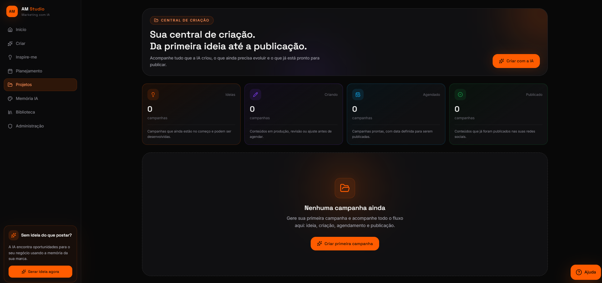
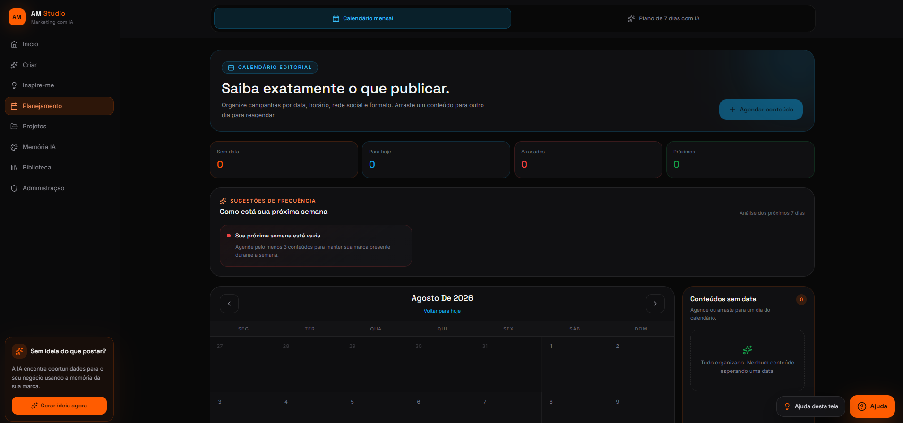
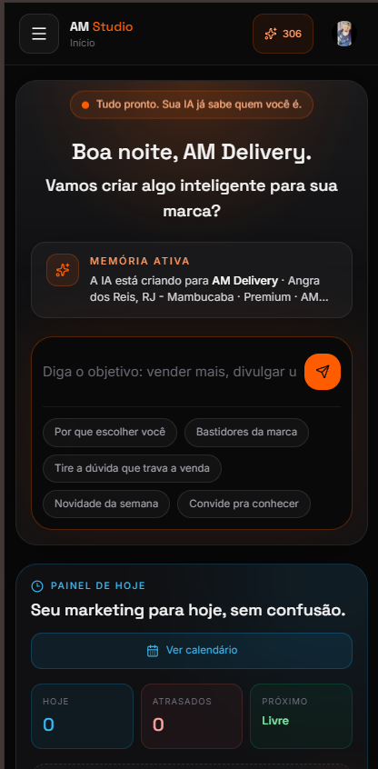

🧠
Memória IA
A IA aprende sobre seu público, estilo de comunicação, segmento e diferenciais.
O AM Studio conhece sua marca e ajuda você a criar campanhas, imagens e planejamentos prontos para usar.Da primeira ideia até a publicação.

Uma central simples para pensar, produzir e organizar seu marketing.
A IA aprende sobre seu público, estilo de comunicação, segmento e diferenciais.
Transforme um objetivo em legenda, chamada, CTA e hashtags.
Gere artes para feed, story, banner e carrossel.
Receba oportunidades de conteúdo quando estiver sem ideias.
Crie uma estratégia de conteúdo organizada para os próximos sete dias.
Organize cada conteúdo por data, horário, rede social e formato.
Acompanhe campanhas entre ideia, criação, agendamento e publicação.
Encontre e reutilize campanhas, imagens e planejamentos já criados.
Cadastre o jeito da sua marca, seu público e seus diferenciais. Essas informações orientam as campanhas, imagens e sugestões criadas pelo AM Studio.
Seu contexto acompanha cada nova campanha, imagem e planejamento.
Visualize o andamento das campanhas e mantenha cada próxima ação organizada.

Planeje a semana com IA e distribua conteúdos no calendário por data, horário, rede social e formato.

Use no computador ou celular. O AM Studio também pode ser instalado como aplicativo PWA, sem depender de loja de aplicativos.

Um fluxo simples, mesmo para quem não entende de marketing.
Conte à IA sobre seu negócio, público e comunicação.
Diga o que deseja divulgar ou peça uma sugestão.
Receba campanhas, textos e imagens alinhados à marca.
Planeje, baixe, copie e acompanhe cada conteúdo.
Consulte o saldo, acompanhe o histórico e compre novos créditos quando precisar. Cada recurso informa o consumo antes da confirmação.
Informações rápidas sobre o funcionamento do AM Studio.
Não. Você informa o objetivo e o AM Studio ajuda a estruturar campanhas, textos, imagens e planejamento.
Sim. A Memória IA utiliza as informações cadastradas sobre público, estilo de comunicação, segmento e diferenciais.
Você pode criar imagens para feed, story, banner e carrossel de três slides.
O sistema ajuda a criar, organizar, copiar, baixar e acompanhar o conteúdo. A publicação nas redes é feita pelo usuário.
As criações com IA utilizam créditos. O consumo é informado antes da confirmação e o saldo pode ser consultado no painel.
Sim. A plataforma é responsiva e pode ser instalada como aplicativo PWA em dispositivos compatíveis.
Crie sua conta e reúna campanha, imagem, planejamento e organização em uma única plataforma.